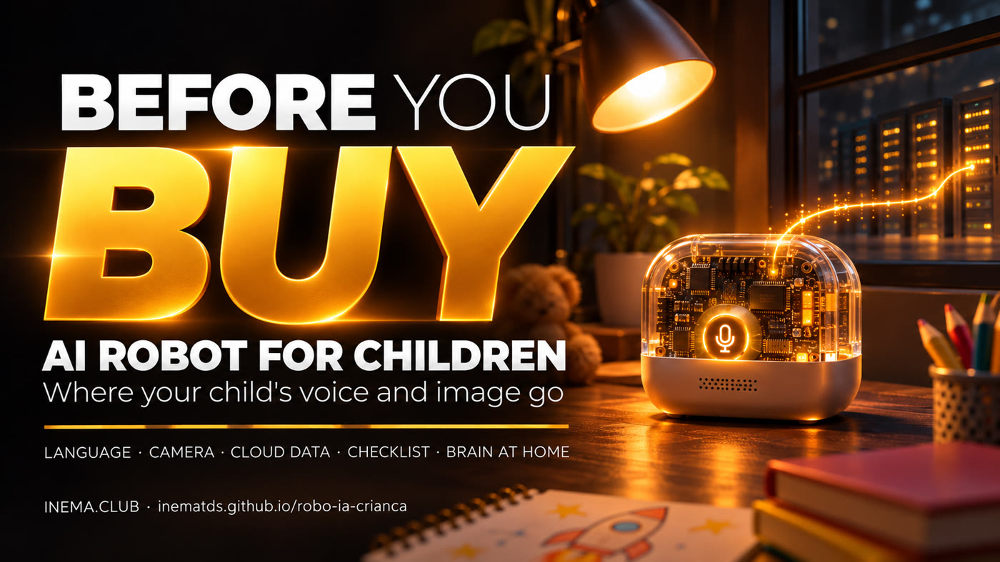

It looks like a toy. Inside, it is a microphone connected to the internet, sending your child’s voice to a server on the other side of the world.

This guide explains the cheap AI robots for children sold on Brazilian marketplaces. They do not have intelligence inside: they record your child’s voice (and, in some models, images) and send them over the internet to AI services in China, which reply by voice. Here you will find the risks, a checklist to use before buying, what to do if you already bought one, and a path, still to be tested, for running the “brain” on your own computer. You do not need to know anything about technology; just read on.
On 07/11/2026, we surveyed listings for children’s AI robots on a large Brazilian marketplace. We found two types. What follows is what the listings themselves say.
It looks like a cartoon robot, with headphones and LED eyes. The listing artwork, in English, promises “AI conversation for children aged 3 to 12,” in Mandarin, English and Cantonese, with “access to 4 major AI models”: Doubao, DeepSeek, Wenxin (Baidu) and Tongyi Qianwen (Alibaba). It also bears the “Overseas Version” label.
Small and shaped like a bean bag. The listing says it is “powered by the DeepSeek AI engine with machine vision”: show it an object, and it tells you what it is and explains it.
We have separated what is likely (what the hardware and listings suggest) from what is confirmed (public projects you can check). We have not opened any of these robots yet.
A small ESP32-S3 board with a microphone, speaker and a little screen for the “eyes,” running the open ecosystem called XiaoZhi. The board only records, sends and plays the reply. Boards like this are sold separately for US$ 8 to 18 (for example: SpotPear AI-BOX). We can only confirm this by opening the robot.
There is an open source server, xiaozhi-esp32-server (MIT license), that you can install at home. It supports local models through Ollama, local voice recognition (FunASR, Sherpa) and several synthetic voices. There is also OpenToys, which uses ESP32-S3 with Whisper running on a computer (focused on Macs with Apple chips).
Doubao is made by ByteDance, the company that owns TikTok. Wenxin is made by Baidu, and Tongyi Qianwen by Alibaba.
There is no need to panic. You just need to know what you are putting in your child’s bedroom.
The “mecha” robot listing mentions only Mandarin, English and Cantonese; the Bean Bun listing does not say which languages it supports. This greatly limits its use and increases the chance of misunderstandings for a child who is still learning to speak.
Your child’s voice goes to servers in China. On models with a camera, images from inside your home and of your child’s face may also be sent. There is no clear privacy policy in Portuguese, so you do not know how long the data is stored, whether it is used to train AI, or who can access it. In Brazil, children’s data has special protection under the LGPD (Brazil’s data protection law) and the ECA (Brazil’s Child and Adolescent Statute).
If the service changes, starts charging or shuts down, the robot becomes a paperweight. You have no control over that.
The AI models behind these robots were not made for Brazilian children. We do not know what filters the manufacturer uses, if any.
AI toy apps that were reviewed had third-party trackers and asked for more permissions than they needed (Cybernews).
AI toy companies registered in China by October 2025, along with tests that found unsafe answers for children (WIRED).
Mozilla’s “Privacy Not Included” guide recommends reading the privacy policy for any connected device before buying.
Sources: Cybernews report on AI toy apps, WIRED report on AI toys in China (data through October 2025), and Mozilla’s “Privacy Not Included” guide. To check, search for the source name together with “AI toys.”
The problem is not the object itself. It is leaving a child alone with it, connected to the internet, without knowing where the data goes.
Since it speaks English, it can be a conversation partner for practice, with an adult beside the child and only for a short time.
Opening it, learning about the board and replacing its brain with one that runs at home is a great electronics and AI project to do with a teenager.
If the seller cannot answer, that is an answer in itself. Printable version: docs/checklist.md (in Portuguese).
You do not need technical knowledge for any of these.
Connect the robot to your router’s guest Wi-Fi network, separate from your computers and phones. Look for “Guest network” or “Guest” in the router’s app or settings page. If you cannot find it, ask your internet provider to turn it on.
If it has a camera, cover it with a piece of black electrical tape or turn it off in the settings.
Do not leave the robot in your child’s bedroom at bedtime.
Use it only when an adult is in the same room.
Teach your child not to tell the robot their full name, school or address.
On your phone, check what the app can access (location, contacts, photos) and remove anything it does not need.
When it is not in use, unplug it or remove the battery.
This part is for a teenager or adult with some electronics experience; if that is not you, feel free to skip it. The idea is to keep the robot’s inexpensive body and replace its cloud brain with one that runs on a computer in your home. Full technical guide: docs/cerebro-local.md (in Portuguese).
Remove the screws (some models are glued or snap together), open it carefully and look for “ESP32-S3” printed on the board’s metal chip. Take a photo of the board. If it has a different chip, this guide will not work.
Install xiaozhi-esp32-server on a PC (the project recommends 4 cores and 8 GB of memory) by following its README, which has a Portuguese version. Set everything up locally: speech to text with FunASR or Whisper, the language model through Ollama, and a synthetic voice in Portuguese.
# server code (for installation, follow the project README) git clone https://github.com/xinnan-tech/xiaozhi-esp32-server.git
Note: the ready-to-use “free” setup included with the project uses cloud services for the model and voice. To keep everything at home, replace each part with a local one. And do not use the public test server mentioned in the project README: it receives the audio of anyone who connects.
Connect the board to the PC with a USB cable, save a copy of the original program, then flash the XiaoZhi firmware configured with your server’s address instead of the manufacturer’s server. The firmware README explains how to flash it and where to enter the address; we will add any details we discover during testing to the technical guide.
# open firmware for the XiaoZhi ecosystem git clone https://github.com/78/xiaozhi-esp32.git
Block the robot’s internet access on your router, leaving access only to your home network. If it still answers in Portuguese, its brain really is at home.
A 30-minute lesson for children ages 6 to 12. No robot, internet, or AI knowledge needed. The tone is curious, not fearful: children learn that they choose what to share.
"When you talk to a robot, where does your voice go?" The class answers, and you write their ideas on the board without correcting them yet.
One child is the robot, another is the "company far away," and they're connected by a string. A phrase spoken to the robot reaches the other side of the room. Everyone sees that the voice left the room.
Does it speak your language? Does it work without internet? Is it camera-free? Read the poster and activity sheet: draw the path of the voice and mark what you should not share.
Don't tell a robot your full name, school, address, or password. Keep the robot out of the bedroom at night. Strange question? Tell an adult. Send a note home.
A script that shows where the robot sends data, how much it sends, and when, including when no one is talking to it. It runs on a Linux laptop, with no account or external service required. If you don't have one, you can check your router's app, which usually shows data usage by device.
The script starts a network called ROBO-VIGIA on the laptop. In the robot's app, switch its Wi-Fi to that network so all its traffic passes through the laptop. First, connect the laptop to the internet with a cable (its Wi-Fi card will become the robot's network) and install tcpdump (sudo apt install tcpdump).
git clone https://github.com/inematds/robo-ia-crianca.git cd robo-ia-crianca/vigia ./hotspot.sh --ligar ./hotspot.sh --clientes # shows the robot's address, e.g.: 10.42.0.50
Leave it running during normal use. Also run the silence test: 10 minutes with the robot on and no one talking.
sudo python3 vigia_robo.py --iface <placa> --ip 10.42.0.50 --saida relatorio.md
The table shows each destination's name, company, the company's country, and how much data was sent. The minute-by-minute chart shows whether the robot sends data on its own. The network monitor shows the route and amount of data, not its contents: the voice is encrypted.
# sample report excerpt (made-up capture, not a measurement from a robot)
| api.tenclass.net | XiaoZhi public server | China (likely) | 145.7 KB |
| ark.cn-beijing.volces.com | ByteDance / Volcengine (Doubao) | China | 3.1 KB |
| 198.51.100.77 | unidentified (static address) | ? | 2.3 KB |
vigia/teste.sh). The hotspot and live capture with a real robot still need to be tested with the Bean Bun. Details: vigia/.When the conversation goes through the family server (the brain at home, above), parents can control it. None of this is possible with a robot connected to the manufacturer's cloud. Planned, not yet built: it depends on the brain at home working.
The text of each question and answer, stored only on the home computer.
Outside those hours, the robot replies, "It's time to rest."
Minutes of conversation per day, like screen time limits.
A blocked topic gets the reply, "Ask an adult."
Sharing an address or password, saying "secret," or repeatedly expressing sadness triggers a phone alert.
A page on the parents' phone shuts down the brain with one tap.
Time spent, most discussed topics, and alerts.
A button deletes the history. The data belongs to the family.
Order: buy and open a Bean Bun → brain at home with the network blocked → use the network monitor to confirm nothing leaves → build the dashboard, starting with history. Full roadmap: ROADMAP.en.md.
Only what the listings and projects say. We do not have the prices of these robots in reais, so we have not included them. On a phone, swipe the table sideways.
| “Mecha” robot | Bean Bun | Robot with a local brain | |
|---|---|---|---|
| Language | Mandarin, English, Cantonese | Not stated in the listing | Portuguese, if the setup works (to be tested) |
| Camera | Only on the square red version | Yes (“machine vision”) | Depends on the board; you decide whether to use it |
| Where the data goes | Chinese cloud services (Doubao, DeepSeek and others) | Cloud (DeepSeek engine) | It stays on your home computer |
| Needs internet | Yes | Yes | No; only your home Wi-Fi network |
| Cost | Cheap (price not confirmed) | Cheap (price not confirmed) | The robot plus a computer you already own; separate boards cost US$ 8 to 18 |
The robot is part of a bigger trend: hardware has become a cheap component, and the real value is in who processes and stores what you say.
Plaud NotePin S and Plaud One, with voice agents: they record and send audio to the cloud for summaries.
Amazon bought Bee. Meta bought Limitless in December 2025.
Sandbar’s Stream ring, and OpenAI’s screenless device with Jony Ive, delayed until 2027.
Product launches and acquisitions reported between 2025 and November 2026.
A company’s computers somewhere else, which receive and process what a device sends over the internet.
A cheap chip with Wi-Fi, used in many connected devices. It is probably the robots’ “electronic body.”
The program installed on the board. It decides which server the robot sends its voice to.
The computer that receives the voice and sends back a reply. It can belong to a company (in the cloud) or to you (at home).
A free program that runs AI models on your own computer, without internet access.
Programs that turn speech into text. They run on a computer at home.
A program that turns text into speech: it is the robot’s “voice.”
An open source license: anyone can use, study and modify the code.
Someone who enjoys building, opening and modifying devices themselves.